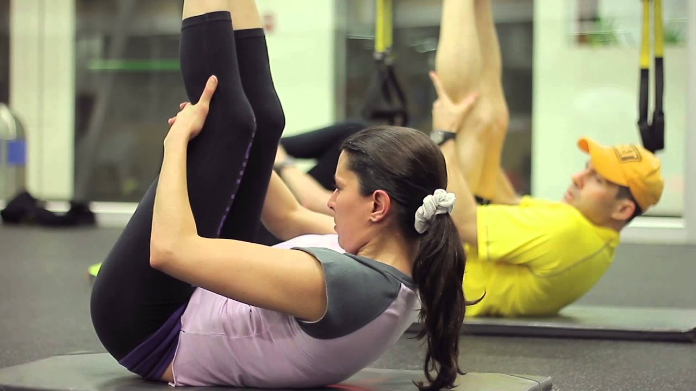

| Funcional | Ideal si estás comenzando:ejercicios simples y buena música te acompañan en el proceso de fortalecer tu musculatura al mismo tiempo que mejorás tu coordinación y tu postura |
|
|---|---|---|
| Stretching |  |
En estas clases, incrementás la flexibilidad de músculos y tendones, mejorás tu postura y movilidad articular y prevenís lesiones o contracturas musculares. Es ideal también si te preparás o relajás de otro entrenamiento o deporte. |
| Musculación |
Mediante la musculación con aparatos se trabaja específicamente el grupo muscular que se desea, cuidando la postura durante el entrenamient |